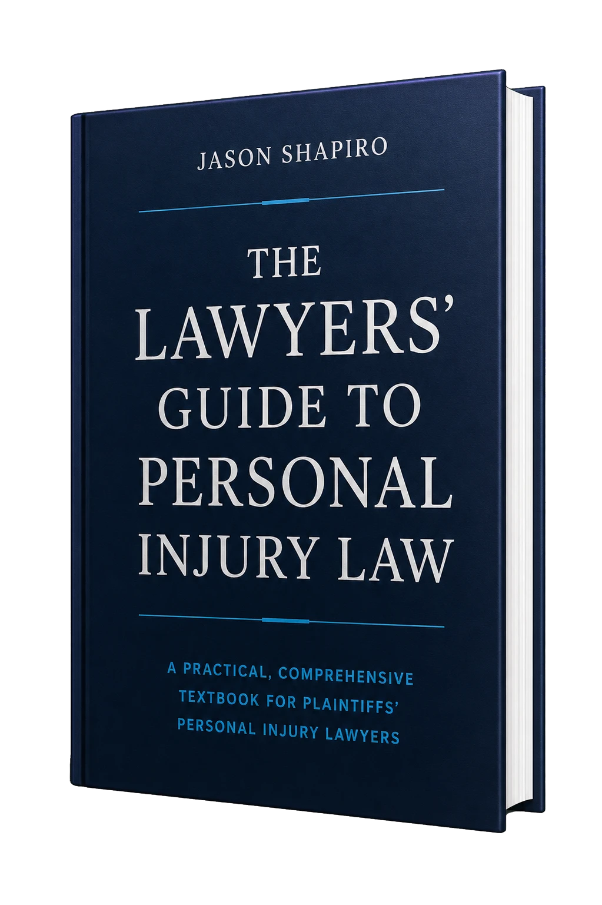

Indemnización por lesión de nacimiento para un niño que sufrió daños graves.
Abogados Litigantes
de Lesiones Personales
Jason Shapiro, Esq.
Abogado Litigante con Formación de la Ivy League
- No Paga Si No Ganamos
- Consulta Gratis
- Se Habla Español

30+Años de Experiencia
$300M+En Resultados
50+Recuperaciones de $1 Millón o Más
AV Preeminent®Martindale-Hubbell®
Resultados Comprobados. Atención Personal.
Resultados Que Cambiaron Vidas
Lesiones graves, hechos disputados y defensas difíciles, manejados con criterio experimentado y participación directa del abogado.
Veredicto para un pasajero expulsado en un choque de vehículos.
Indemnización en una colisión de vehículos disputada.
Publicidad de Abogados. Los resultados anteriores no garantizan un resultado similar.
Representación Especializada en Lesiones Personales
Los Casos Graves Exigen una Preparación Rigurosa
Desde el principio, investigamos, desarrollamos y preparamos cada caso teniendo en cuenta la posibilidad de ir a juicio. Este enfoque disciplinado ayuda a preservar pruebas, anticipar defensas y preparar los reclamos graves para procurar el mejor resultado posible.
01Accidentes de Construcción
Accidentes de
Accidentes en Propiedades
Negligencia Médica
Accidentes de Construcción
y Andamios
Caídas, equipos inseguros, objetos que caen y condiciones peligrosas en el trabajo.
02Accidentes de
Vehículos
Conductores, pasajeros, peatones, ciclistas y vehículos comerciales.
03Accidentes en Propiedades
y Aceras
Condiciones peligrosas, escaleras, pisos, nieve, hielo y aceras.
04Negligencia Médica
y Lesiones de Nacimiento
Revisión con expertos sobre la atención aceptada, desviaciones y causalidad.
Por Qué Elegir Nuestro Bufete
Abogados Experimentados Manejan Su Caso
Jason Shapiro y el Abogado Litigante Principal Hon. Ernest Buonocore aportan décadas de experiencia en juicios. El juez Buonocore también aporta la perspectiva de un exjuez y mediador. Su caso recibe participación directa de abogados, no un trato en serie.
Preparado Alrededor del Caso
- Criterio probado en juicios
- Experiencia en apelaciones
- Atención directa de abogados
- Resultados sustanciales
- Inglés y español
Nuestros Abogados
Experiencia en Juicios. Atención Directa.
Jason Shapiro, Esq.
Fundador y Abogado LitiganteMás de 30 años representando a neoyorquinos lesionados en casos importantes de construcción, vehículos, propiedades y negligencia médica.
Hon. Ernest Buonocore
Abogado Litigante PrincipalUn abogado litigante experimentado, exjuez y mediador que aporta una perspectiva distintiva a casos graves de lesiones personales.
Una Autoridad Publicada
Escribió el Libro Sobre
Lesiones Personales
The Lawyers’ Guide to Personal Injury Law explica cómo los abogados de demandantes investigan, desarrollan, litigan y llevan a juicio casos de accidentes. Su autor es el abogado que dirige el bufete encargado de su caso.
Conozca a Jason ShapiroCuéntenos Qué Pasó
La consulta es gratis. Llame al 718.295.7000 o envíe un mensaje y un miembro del bufete se comunicará con usted pronto.
Solicite una Consulta GratisSe Habla Español • No Paga Si No Ganamos